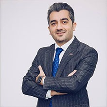
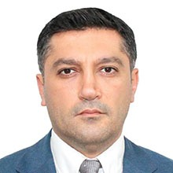
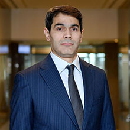
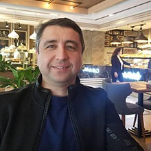
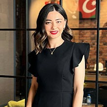
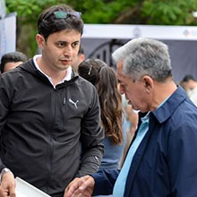
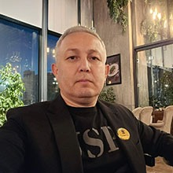
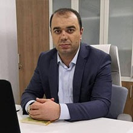

❝
★★★★★
Founder Club is a platform that supports innovation in the business world and empowers young entrepreneurs and startups. Such clubs typically encourage networking and exchange of experiences in the business world, offering resources, mentoring and support to entrepreneurs. One of the main advantages of the club is that it creates an environment and opportunities for its members to realize their vision.

Jamid Movsumov
Head of the Azerbaijan Franchising Association
❝
★★★★★
Founder Club plays a very important role in creating unique platforms for entrepreneurs and startup founders. They provide suitable conditions for both networking and exchange of knowledge and experience. An institution like the Founder Club helps innovative ideas and initiatives to scale up by supporting them.

Babek Aliyev
Azer Legal Group (Founder)
❝
★★★★★
Founder Club is a bridge between young entrepreneurs and experienced business leaders and investors. Mentoring programs for members provide training and sharing of experiences to solve problems faced in the real business world. Founder Club members often have direct access to investors and other resources that support business development. It provides funding and networking opportunities to accelerate the development of startups. These features make Founder Club not only a networking platform, but also a powerful support and development center.

Anar Bayramov
BIZCON LLC
❝
★★★★★
Founder Club's global connections are one of its greatest strengths and create a wide range of opportunities for entrepreneurs. This global network gives its members unique opportunities to build and expand business not only in local markets, but also internationally. Members of the Founder Club have the opportunity to connect with entrepreneurs, investors and business leaders from around the world. This is important for establishing business relationships in different countries and entering new markets.

Orkhan Mammadov
BMG International (Founder)
❝
★★★★★
The sincerity of the Founder Club is reflected in its philosophy of community building and the atmosphere of mutual support created among members. The main strength of this club comes from the fact that entrepreneurs come together not only to network, but also to support each other in a friendly and collaborative environment. Founder Club is a perfect place not only to establish business contacts, but also to create long-term friendships and reliable partnerships.

Kamran Masadiyev
Kitchen Plus (Founder)
❝
★★★★★
Founder Club's relationship with the construction sector is of great importance, especially for entrepreneurs working in this field. The construction sector is dynamic and complex, where building business relationships and partnerships is very important. The Founder Club provides an opportunity to network with people who are experts in their field. This allows learning new perspectives and innovative approaches to solving problems encountered in the implementation of construction projects.

Malak Mahmudova
MLK Construction (Founder)
❝
★★★★★
Thanks to Founder Club's B2B meetings, it is important to establish strategic relationships between entrepreneurs and companies. B2B meetings organized by the club provide an ideal platform for direct cooperation, partnership and implementation of projects in the business world. The companies explore opportunities to cooperate with each other, discuss new projects and business opportunities.

Kanan Bashirov
Overmetal Founder
❝
★★★★★
Founder Club's cooperation with foreign exhibitions and the opportunities provided to its participants are important in terms of international recognition and expansion of entrepreneurs and businesses. It makes it easier for club members to participate in foreign exhibitions. Foreign exhibitions are an ideal networking platform for direct contact with business people and potential customers from different countries.

Anar Yusubov
Estet LLC
❝
★★★★★
Founder Club's educational role provides a perfect platform for entrepreneurs and young professionals to enhance their knowledge and skills. The club aims to support its members with various educational opportunities, seminars, trainings and mentoring programs. Founder Club organizes various trainings and seminars for entrepreneurs that help them increase the knowledge and skills needed in the modern business world.

Zaur Maarif
Edu Distance
❝
★★★★★
Founder Club's role in friendships helps to build healthy and positive social relationships between entrepreneurs and people in the business environment. The club not only strengthens business relationships, but is also an important component in terms of personal development and emotional support. It allows for the establishment of sincere and friendly relations between the members.

Suleyman Agayev
Spring Home Textiles